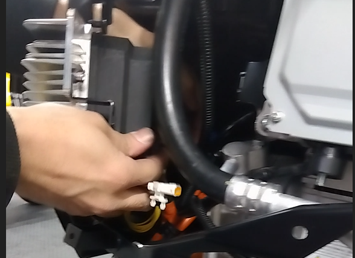
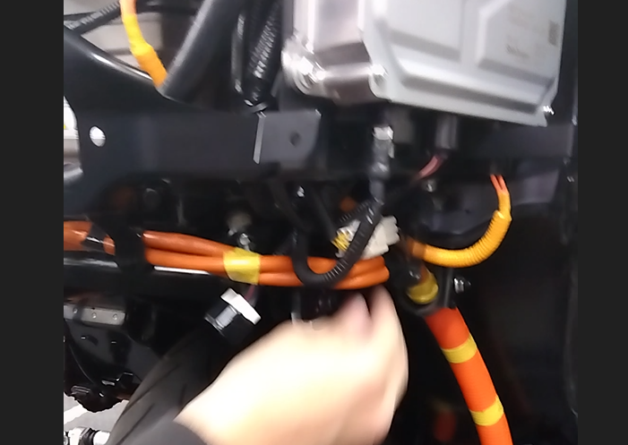
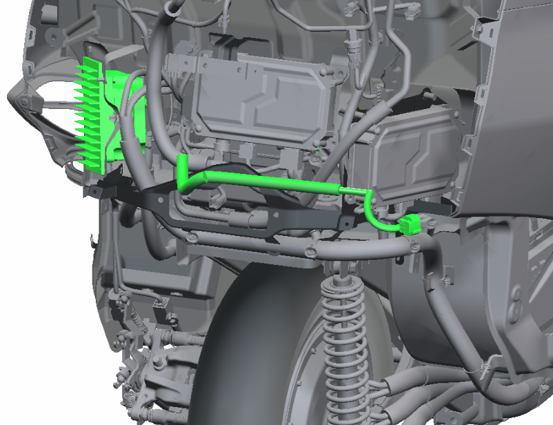
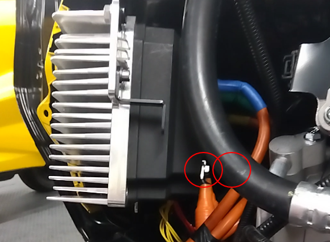
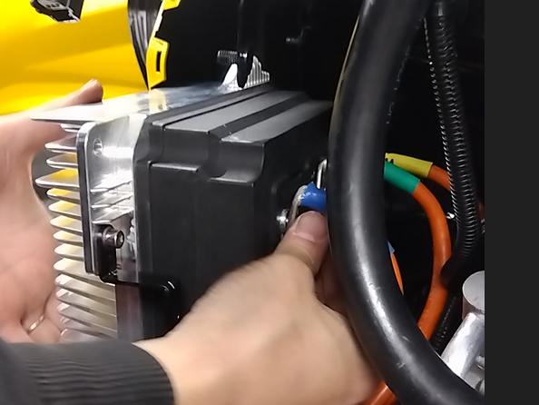
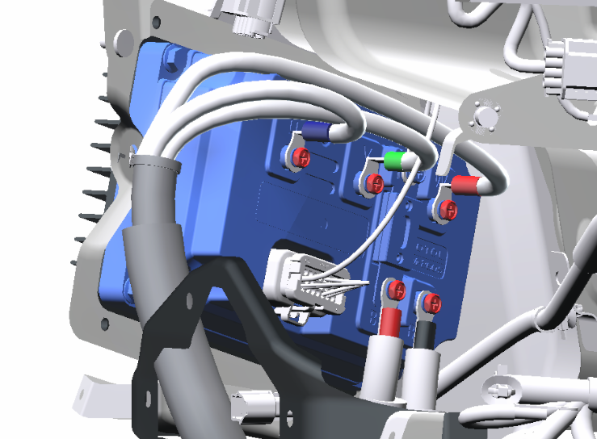

11-3 インバーター
構成図
|
1 |
INVERTER ASSY, ELECTRIC VEHICLE TRACTION (A4110-B1000) |
- |
- |
取り外し前作業
-
タイヤカバーを取り外す。4-1-2外装(リヤ)
取り外し手順

1.車両メインスイッチのオフ

2.INVERTER ASSY, ELECTRIC VEHICLE TRACTION取り外し
-
高圧電源ケーブルのクランプ2か所を外し、インバーターのナット3個を外す。
-
インバーターを引き出す。

-
インバーターにはメインバッテリーに繋がる赤端子/黒端子、ホイールに繋がる青端子/緑端子/黄端子がある。
-
青端子/緑端子/黄端子、および赤端子/黒端子を取り外し車体と分離する。
※メインスイッチオフ後10秒で電圧は0Vに設計上なっている。

-
インバータに接続されているコネクターを切り離す。

-
コネクターを切り離す。

-
ハーネスを引き出し、インバータを取り外す。
取り付け手順
1.INVERTER ASSY, ELECTRIC VEHICLE TRACTION取り付け
-
ハーネスがエアコンコンプレッサーの裏側をとおるようにして、インバータを仮置きする。
-
コネクターを接続する。
-
インバータに接続されているコネクターを接続する。

-
赤端子/黒端子を接続する。
-
ナット2個を締め付ける。

-
青端子/緑端子/黄端子を接続する。
-
ナット3個を締め付ける。

-
インバータ接続端子が図のように取り付けられていることを確認する。
←形状ちがうようです。
-
高圧電源ケーブルのクランプ2か所を接続する。
-
インバータを車両に取り付け、ナット3個を締め付ける。締め付ける。
2.タイヤカバーを取り付け4-1-2 外装(リヤ)